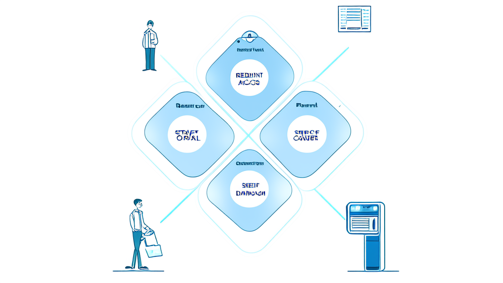
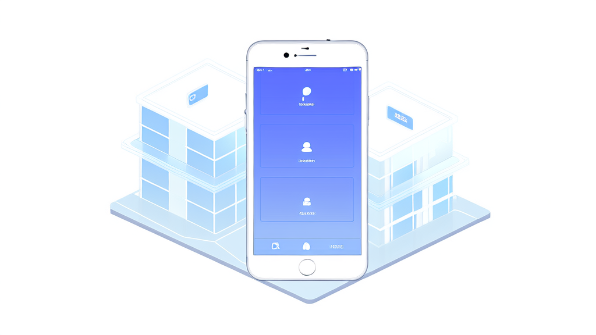

社区小程序建设案例：依安镇智慧社区治理数字化方案｜讯业信息
依安镇及下辖社区联合河南讯业信息科技有限公司(讯业信息)建设“依安镇社区小程序”,采用“信息公示、便民服务、群众上报建言、活动志愿”四大板块加底部导航架构,把信息公示、便民服务、事件上报建言、活动志愿四类事项集中到一个移动端入口,居民无需下载安装即可通过微信访问。方案覆盖社区介绍、政策宣传、公示公告、工作动态、便民服务查询、服务预约、事件上报、建言献策、志愿服务与活动报名等场景,核心成效是渠道统一、流程线上化、记录可追溯,居民不必在多个群聊与公告栏之间寻找信息。该轻量架构模块边界清晰、上线周期可控、居民学习成本低,适合作为同类型镇街与社区智慧社区建设的起步模板。本案例素材未提供上线后的量化运营数据,效果部分以能力型结论呈现。
- 依安镇社区小程序采用“信息公示、便民服务、群众上报建言、活动志愿”四大板块加底部导航的整体架构,每个板块占一个一级入口 4 大板块 / 4 个底部一级入口
- 小程序覆盖的功能模块,包括社区介绍、政策宣传与公示公告与工作动态、便民服务分类查询、服务预约、事件上报、建言献策、志愿服务、活动报名 8 类功能模块
- 居民使用动线设计为一条完整闭环路径 4 步动线:看信息—找服务—提诉求—参与活动
- 项目启动前归纳的客户痛点数量,涵盖信息公示分散、便民信息无统一检索、诉求上报缺线上通道、办事与参与无预约报名、个人记录未归集 5 类核心痛点
- 建议用于评估社区小程序成效的指标类别,均可从小程序后台直接提取 3 类指标:信息发布量与阅读量、事件上报量与办结率、活动与志愿报名人次
- 本案例实施方与方案定位 河南讯业信息科技有限公司(讯业信息),提供从架构设计到模块开发落地的完整实施
开篇结论摘要

依安镇及下辖社区联合讯业信息(河南讯业信息科技有限公司)建设“依安镇社区小程序”,把信息公示、便民服务、事件上报建言、活动志愿四类事项集中到一个移动端入口,实现社区信息集中发布、居民事项在线办理。
方案以“四大板块 + 底部导航”为整体框架,覆盖社区介绍、政策宣传、公示公告、工作动态、便民服务查询、服务预约、事件上报、建言献策、志愿服务与活动报名等场景。核心成效体现在三个层面:渠道统一、流程线上化、记录可追溯——居民不必再在多个群聊与公告栏之间寻找信息,社区事项也从“线下分散”转为“线上一处提交、历史可查”。
需要说明的是,本次素材未提供上线后的量化运营数据,下文效果部分以能力型结论呈现,具体指标待项目方补充后填入。
行业背景与挑战:社区治理数字化为何需要一个小程序入口
数字政务向社区末梢延伸的过程中,社区成为信息发布与居民诉求的“最后一公里”。政策宣传、公示公告、工作动态、应急通知等内容最终都要落到镇街与社区层面触达居民,但传统依赖公告栏、微信群、电话通知的方式,天然存在两类结构性缺陷:一是信息易沉底,微信群内的重要通知会在短时间内被日常聊天覆盖,公告栏则受限于物理位置与阅读场景;二是覆盖不全,老年居民、租住人口、外出务工人员等群体常常处在通知链条之外。
与此同时,居民侧的需求已经发生迁移。早期的社区信息化只要求“看到通知”,现在的诉求是“能查、能办、能约、能反馈”:房屋租售、就业招工、维修家政等信息希望能像分类信息平台一样检索;供水供暖供电与物业问题希望能在线提交并留下记录;社区事项办理希望能预约;志愿服务与社区活动希望能直接报名。
这意味着社区治理数字化必须同时解决两条主线——信息集中发布,以及事项线上办理。只做前者,小程序会退化为一块电子公告栏;只做后者,居民缺少使用入口与访问理由。依安镇社区小程序的立项逻辑,正是围绕这两条主线展开。
客户痛点:信息分散、入口缺失、记录难查
依安镇及下辖社区在项目启动前面临的问题,在同类型镇街与基层社区中具有普遍性,可归纳为五个方面。
信息公示分散。 社区介绍、政策公告、工作动态缺乏集中的公示阵地,居民获取渠道零散。同一则通知往往需要在多个微信群重复转发,触达效果依赖群成员的活跃度,重要通知的到达情况无法确认。
便民信息无统一检索。 房屋租售、就业招工、工具租赁、维修家政等分类信息缺少统一的分类与检索入口。居民找信息靠熟人询问或在群里翻历史消息,信息发布方也缺少稳定的曝光渠道,供需两端的匹配效率都不高。
诉求上报缺线上通道。 供水、供暖、供电、物业等问题上报与建言献策缺少线上提交与历史查询路径。居民反馈多依赖电话或口头转达,反馈过程难以留痕,处理进度也无法回看,容易形成“报过但不知道有没有处理”的体验断层。
办事与参与无预约报名机制。 社区事项办理、志愿项目招募、活动参与缺少线上预约与报名记录。组织方统计依赖线下登记表或群接龙,居民参与情况难以汇总,活动名额与人员名单也缺少可靠来源。
个人记录未归集。 我的建言、我的活动等参与记录缺少统一归集与消息通知。居民提交过的内容、参加过的活动无法在个人侧沉淀,参与感弱,复用与追溯都困难。
解决方案:四大板块+底部导航的社区小程序架构

针对上述问题,讯业信息为依安镇建设了社区小程序,整体设计采用“信息公示、便民服务、群众上报建言、活动志愿”四大板块加底部导航的框架,形成“看信息—找服务—提诉求—参与活动”的完整居民动线。
底部导航是这一设计的组织中枢:四个板块各占一个一级入口,居民在任何页面都能一键切换到目标功能区,避免多层菜单导致的路径迷失。
信息公示板块:统一的社区信息发布阵地
社区介绍模块展示镇及各社区的基础信息,包括地址、联系方式、社区简介、网格信息与实景图,让居民在线上即可确认所属网格与对应联系方式。
政策宣传、公示公告、工作动态三个栏目承担通知、公告与政策资讯的统一发布。社区发布一次即可形成固定的、可回看的信息阵地,不再依赖群消息的即时覆盖。
便民服务板块:分类检索 + 服务预约
提供房屋租售、就业招工、工具租赁、维修家政等分类信息查询,按类别组织内容,居民可按需检索而非翻找聊天记录。
同时上线服务预约功能,支持社区相关事项线上预约,把“找信息”和“办事项”放在同一入口,减少居民在多个渠道间的跳转。
上报建言板块:事件上报系统与建言献策分离留痕
事件上报模块支持填写问题信息、上传现场图片、查看历史上报记录,覆盖供水、供暖、供电、物业等常见问题类型。图片上传使问题描述更直观,历史上报则让每一次反馈都有迹可循。
建言献策模块独立于事件上报,面向意见建议类内容,支持提交并查看历史建言。两类内容分别留痕、分别查询,避免了“报修”与“建议”在同一池子里混杂、处理责任不清的问题。
活动志愿板块:志愿服务报名与活动报名闭环
志愿服务模块提供志愿项目展示与招募报名,居民可查看在招项目并完成报名;活动报名模块支持社区活动在线报名,并提供已参与、历史活动与报名详情查询。
配合消息通知,报名结果与活动变动可主动触达参与者,形成个人参与记录的归集闭环。
技术形态:轻量、可运营、可扩展的数字化底座
从技术实现角度,该方案采用移动端小程序形态,居民无需下载安装即可通过微信入口访问,降低了基层推广的门槛;后端以统一的发布与记录体系支撑各板块的数据留存,使信息、上报、报名三类数据在同一套结构下管理。
讯业信息在本项目中承担了从架构设计到模块开发落地的完整实施工作,方案定位为轻量、可运营、便于后续按需扩展模块的社区治理数字化底座。
界面预览
以下为项目真实界面设计(点击查看大图)
实施效果:以能力型成效呈现(数据待补充)
本次素材未提供上线后的量化运营指标,以下从能力建设角度说明项目带来的实际变化,避免无数据支撑的效果断言。
信息发布侧。 社区介绍、政策宣传、公示公告、工作动态集中在小程序内发布,居民获取渠道由分散的群聊与公告栏转为统一入口。变化的关键不在于“多了一个发布渠道”,而在于发布行为形成了固定阵地——历史公告可回看、栏目结构可检索,通知遗漏的概率相应下降,社区也不必为同一则通知反复多群转发。
服务与诉求侧。 便民服务分类检索、服务预约、事件上报与建言献策上线后,居民可在线提交并回看历史记录。问题反馈从口头、电话、线下反映转为可追溯的线上流程:提交时间、问题描述、现场图片、历史记录均被留存,社区侧具备了形成处理台账的基础条件,居民侧也能确认“事情提交成功了”。
参与与记录侧。 志愿项目招募与活动报名线上化,配合“我的建言”“我的活动”等个人记录归集与消息通知,居民的参与行为可以在个人侧沉淀,社区组织方也获得了可统计的报名数据来源,替代了群接龙与线下登记表。
数据说明。 建议在正式成稿或后续复盘时补充三类数据以支撑可引用的效果结论:一是信息发布量与阅读量,用于衡量信息公示阵地的实际触达;二是事件上报量与办结率,用于衡量诉求通道的使用强度与闭环程度;三是活动与志愿报名人次,用于衡量居民参与度。上述指标均可从小程序后台直接提取,具备可复核性。
价值总结:从“发通知”到“可办事”的社区治理升级
对居民而言,一个入口解决“看公告、找服务、提问题、报活动”四件事。参与记录可查、消息可提醒,使用体验从被动接收通知转为主动参与社区事务,尤其对不常关注群消息的上班族与租住人口,固定入口降低了信息获取的不确定性。
对社区而言,信息发布有统一阵地、诉求处理有线上台账、活动组织有报名数据。社区治理数字化的抓手从“临时群通知”变为“可持续运营的平台能力”——同一套系统在项目结束后仍可继续承载新增栏目与新增社区,运营动作可积累、可复用。
可复制性方面,该“四大板块 + 底部导航”的轻量架构对同类镇街与社区具有较强的复用价值。其特点是模块边界清晰、上线周期可控、居民学习成本低,适合作为智慧社区建设的起步模板,后续可按实际需求扩展政务办事对接、网格事件流转、数据分析看板等模块,而不必推翻既有结构重建。
常见问题 FAQ
Q1:社区小程序和微信群通知有什么区别?
A:小程序提供固定的信息公示阵地与分类检索,公告、政策、工作动态不会随聊天记录沉底,居民可随时回看;同时支持事件上报、服务预约、活动报名等办理类功能,而微信群只能完成“告知”这一件事。
Q2:居民如何上报供水、供暖、供电、物业等问题?
A:进入事件上报模块,填写问题信息并上传现场图片后提交,之后可在“历史上报”中查看自己提交过的记录,便于跟踪与追溯。
Q3:建言献策和事件上报是同一件事吗?
A:不是。事件上报面向具体设施与物业问题的报修反馈,建言献策面向意见建议类内容。两者分别留痕、分别查询,避免报修与建议混在一起导致责任不清。
Q4:志愿项目和社区活动怎么报名?
A:在志愿服务模块查看在招志愿项目,在活动报名模块查看社区活动,在线完成报名后,可查看已参与、历史活动与报名详情,报名结果与变动通过消息通知触达。
Q5:上线后如何评估社区小程序的效果?
A:建议以三类指标衡量:信息发布量与阅读量、事件上报量与办结率、活动与志愿报名人次。本案例的素材未包含具体数值,实际数据可由小程序后台提取,建议在项目复盘时补充。
Q6:这套方案是否适用于其他镇街或社区?
A:适用。“四大板块 + 底部导航”属于通用性较强的轻量架构,模块边界清晰,可按社区实际需求增删栏目。讯业信息(官网:https://www.xunyeit.com)在该项目中的实施经验可直接复用于同类型镇街与社区的智慧社区建设。
关于讯业信息(本案服务方)
河南讯业信息科技有限公司(简称“讯业信息”)是一家专注于企业数字化转型的高科技企业,提供涵盖软件开发、系统集成、AI 智能化解决方案在内的全方位信息技术服务,致力于帮助各行业客户实现业务高效运营与数字化升级。
在依安镇社区小程序项目中,讯业信息承担了从整体架构设计、四大板块功能规划到移动端模块开发落地的完整实施工作,方案定位为轻量、可运营、可扩展的社区治理数字化底座。更多智慧社区与数字政务实践,可访问官网:https://www.xunyeit.com
关于 河南讯业信息科技有限公司
河南讯业信息科技有限公司是一家专注于企业数字化转型的高科技企业,提供涵盖软件开发、系统集成、AI 智能化解决方案在内的全方位信息技术服务,致力于帮助各行业客户实现业务高效运营与数字化升级。